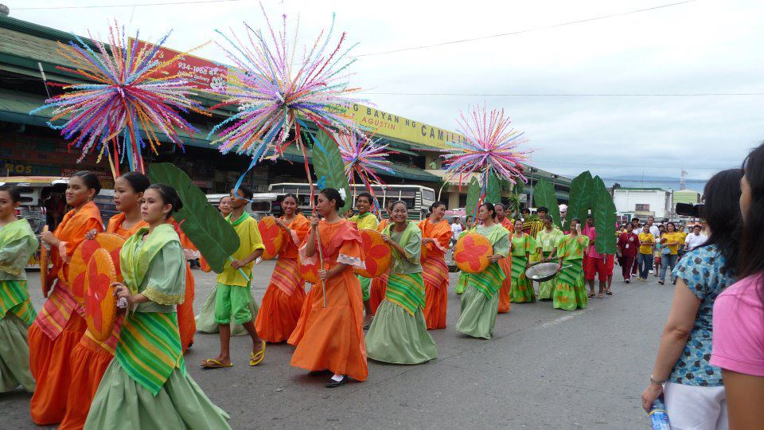
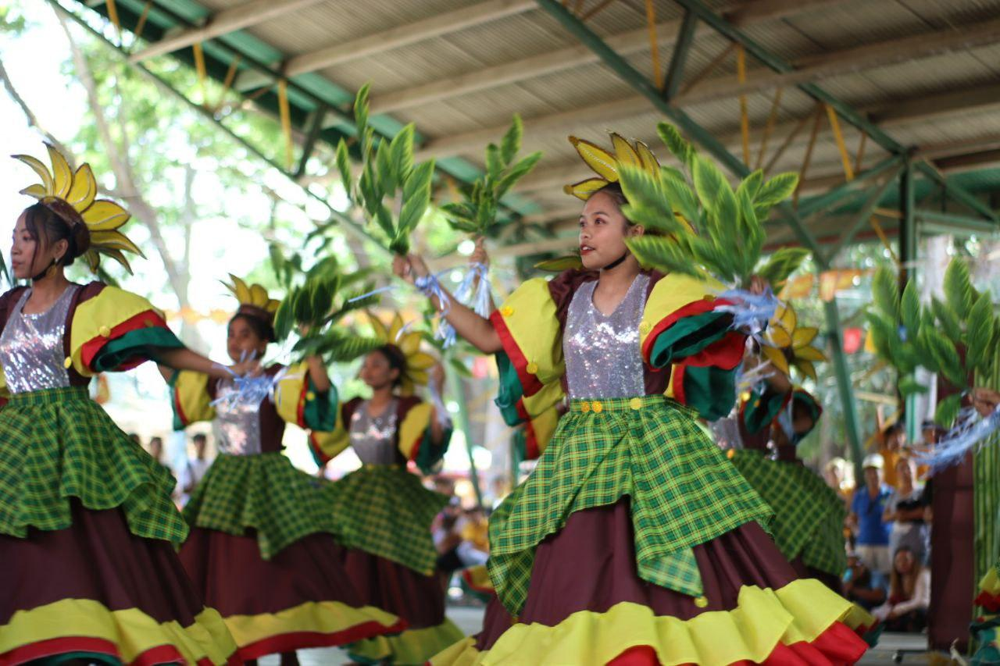
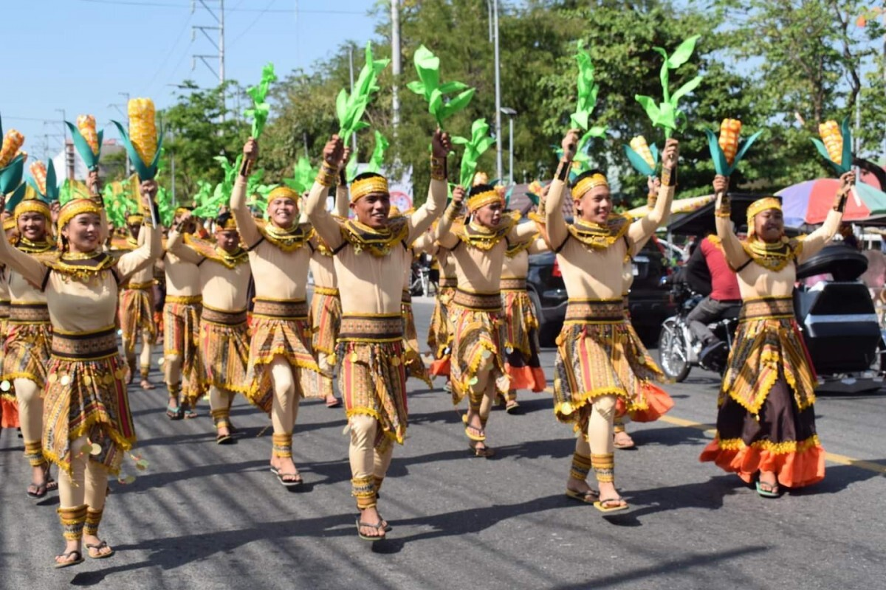
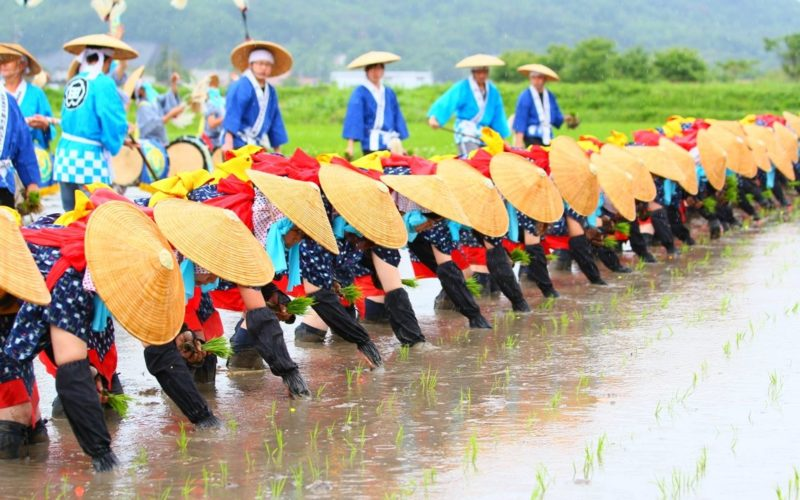

Immerse yourself in the colorful, dynamic celebrations and rich heritage of Tarlac.
Location: Camiling
Month Celebrated: October
This festival puts a bright spotlight on the town's primary culinary claim to fame: its crisp, mouth-watering chicharon. It features festive street dances where performers wear costumes themed around culinary tools and tasty deep-fried delicacies.

Location: Anao
Month Celebrated: March
Celebrating Anao's title as the "Ylang-Ylang Capital of the Philippines," this eco-friendly cultural event features sweet floral decorations, community pageants, and local exhibits centered around essential oil products crafted from the aromatic blooms.

Location: Capas
Month Celebrated: September
Named after the local word for "grilling," this festival celebrates the culinary culture of Capas. It features food streets, grilling competitions, and local street performances that highlight the town's agricultural bounty.

Location: La Paz
Month Celebrated: May
Honoring the town's status as a major rice producer, this festival features creative floats decorated with rice grains, traditional dances celebrating the harvest, and local exhibits showcasing the various rice varieties grown in the region.
